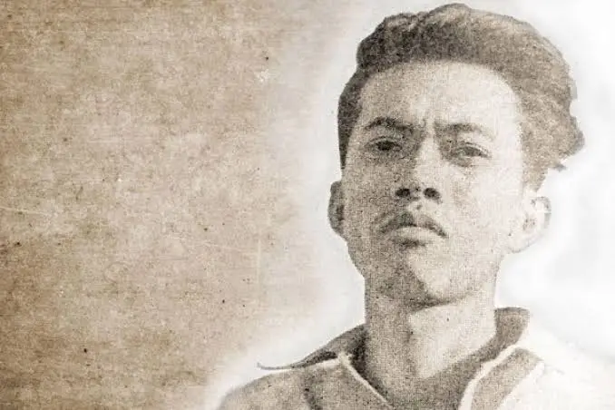

Chairil Anwar

Biografi Singkat
Pelopor Angkatan '45 dan penyair modern Indonesia yang dikenal karena karyanya yang semangat, pemberontakan, dan kebebasan berekspresi.
Ia lahir di Medan dan meninggal di usia 27 tahun. Karya-karyanya, seperti Deru Campur Debu, Kerikil Tajam dan Yang Terampas dan yang Putus, dan Tiga Menguak Takdir, memiliki tema individualisme, eksistensialisme, dan perjuangan.
Karya-Karya Terkenal
Chairil anwar sudah menulis banyak sekali puisi dan buku yang fenomenal dan menjadi inspirasi dari penulis yang lainnya di Indonesia. Berikut adalah beberapa puisi Chairil Anwar:
- Puisi yang berjudul "Aku"
- Puisi yang berjudul "Kerawang Bekasi"
- Puisi yang berjudul Derai-Derai Cemara"
- “Chairil Anwar: Sebuah Pertemuan” oleh Arief Budiman
- Aku ini Binatang Jalang: Koleksi Sajak 1942–1949 oleh Chairil Anwar
- Aku: Berdasarkan Perjalanan Hidup Dan Karya Penyair Chairil Anwar” Oleh Sjuman Djaya
Fakta Menarik
- Meskipun pendidikannya hanya sampai sekolah dasar (SD), ia menguasai empat bahasa asing: Belanda, Inggris, dan Jerman, selain bahasa Indonesia.
- Ia sangat gemar membaca berbagai karya sastra dari pengarang internasional seperti Rainer Maria Rilke dan W.H. Auden.
- Chairil Anwar merupakan salah satu pelopor Angkatan '45, yang memperkenalkan gaya puisi modern yang lebih bebas dan lirik.
- Puisi-puisinya yang paling terkenal adalah "Aku" (yang sempat diterbitkan dengan judul "Semangat" untuk menghindari penyensoran) dan "Karawang-Bekasi".
- Ia menghasilkan sekitar 94 karya, termasuk 70 sajak, 4 saduran, 10 sajak terjemahan, 6 prosa asli, dan 4 prosa terjemahan.
- Ia juga dikenal sebagai orang yang tidak terlalu peduli dengan peraturan tata bahasa dalam puisinya, serta gemar mengubah dan mengedit puisinya sendiri.